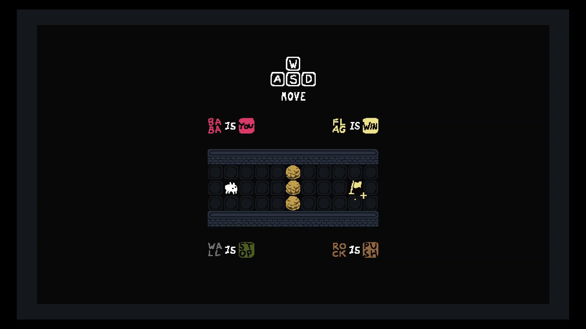
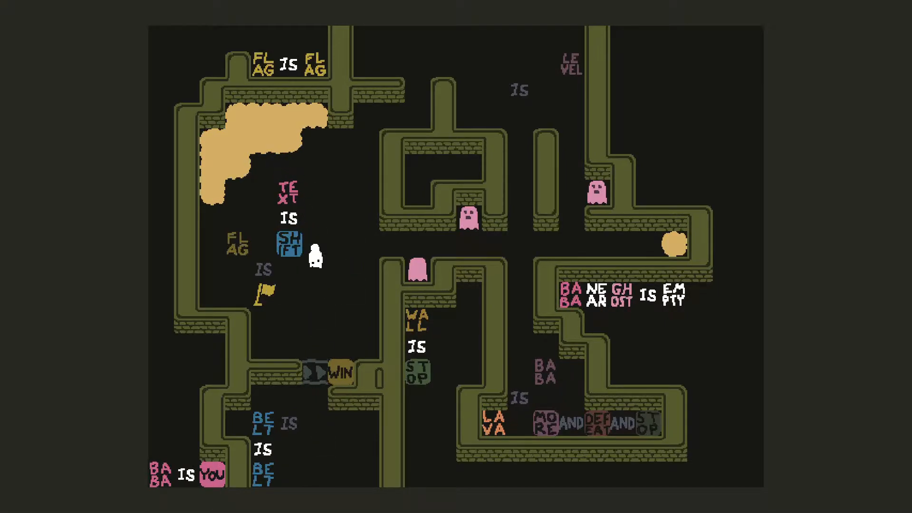
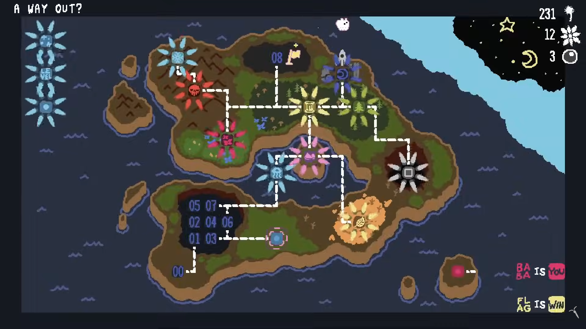

Sobre o jogo:
Baba Is You é um jogo de quebra-cabeças no qual as
próprias regras dos níveis podem ser modificadas pelo jogador.
A história acompanha Baba, uma pequena criatura que atravessa um mundo
cheio de regras representadas por palavras. Ao mover palavras como
BABA, IS e YOU, o jogador pode
alterar a lógica daquele mundo e até mesmo descobrir diferentes
maneiras de interpretar quem ou o que é o próprio personagem.
A narrativa é bastante abstrata e deixa grande parte de sua
interpretação para o jogador.
Imagens:


Gameplay e Trailer:
Trilha sonora:
- Nome da faixa: Wall Is Stop.
- Número da faixa: 3.
- Nome da faixa: Cog Is Push.
- Número da faixa: 5.
- Nome da faixa: Leaf Is Move.
- Número da faixa: 6.
Informações:
- Lançamento: 2019
- Desenvolvedora: Hempuli
- Publicadora: Hempuli